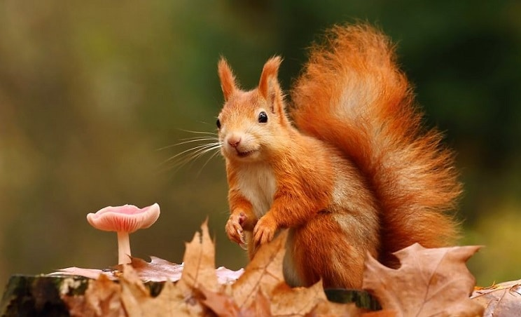
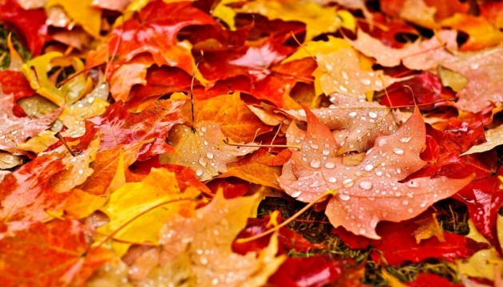
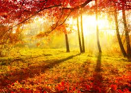

Так, що все навкруг жовтіє.
Жовті квіти і листочки,
Жовті дині й огірочки,
Що достигли на насіння,
Бо прийшла пора осіння.
Сумує жовтень в нашому саду.
Поодцвітали мальви сніжно-білі,
Хмелі перебродили у меду,
І журавлі полинули у вирій.
Вже не сміються ластівки малі.
Не золотіє мак духмяним цвітом.
А яблуні – заплакані й сумні…
Вони не скоро знов побачать літо.
Все листопади вдаль перенесли…
Бузкова тиша. Сад тривожно-синій
Смородина ще в залишках золи.
А на гілках цвіте холодний іній.